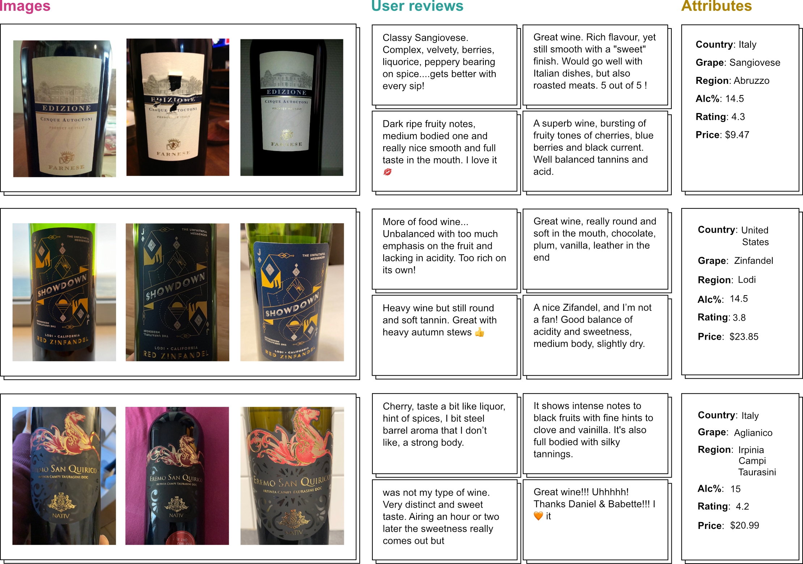

Overview
The dataset encompasses 897k images of wine labels and 824k reviews of wines curated from the Vivino platform.
It has over 350k unique vintages, annotated with year, region, rating, alcohol percentage, price, and grape composition.
We obtained fine-grained flavor annotations on a subset by conducting a wine-tasting experiment with 256 participants who were asked to rank wines based on their similarity in flavor,
resulting in more than 5k pairwise flavor distances.

Acknowledgements
We thank the Danish Data Science Academy (DDSA) for their financial support. We also acknowledge Vivino for their assistance and resources.

WineSensed by Thoranna Bender, Simon Søresen, Alireza Kashani, Kristjan Eldjarn, Grethe Hyldig, Søren Haugberg, Serge Belongie, Frederik Warburg is licensed under a Creative Commons Attribution 4.0 International License